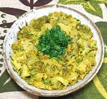

|
Curried Chicken SaladBrazil - Salada de Galinha ao Curry com Amêndoas e Passas | ||||
| Makes: Effort: Sched: DoAhead: |
4 salad *** 1-1/3 hrs Yes |
With its bright color, pronounced curry flavor, and interesting textures, this recipe is particularly good as a small appetizer salad. It would also make a fine sandwich filling. | |||
| This recipe makes 1 pound 5 ounces of finished salad. It is a little involved, but parts, and in fact the whole salad, can be made ahead. | |||||
|
12 1/3 1/3 2 3 2 2 1 1 1/2 1 ----- 1 3 1/2 1/3 ----- |
oz c c T oz cl T T t t c --- T T t t --- |
Chicken, cooked (1) Almonds, blanched Raisins, golden Wine, white Onion Garlic Parsley Olive Oil Curry Powder (2) Turmeric Stock, Chicken -- Dressing Balsamic Vinaigrette (3) Mayonnaise Salt Pepper --------------- |
Make - (1 hr + some cooling time)
|